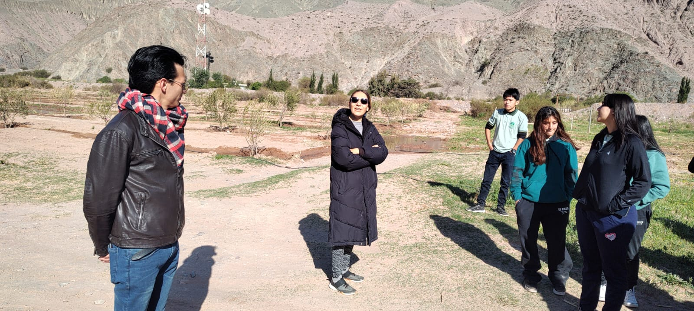
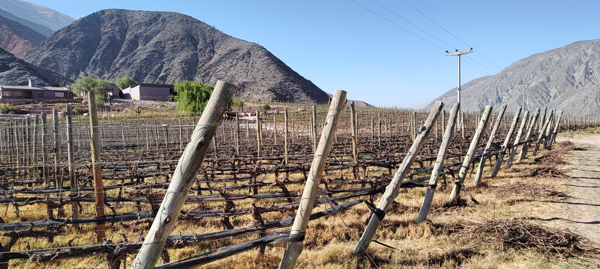

PROYECTO EDUCATIVO
DESAFIO EMPRENDEDOR REVISTA EDUCATIVA DIGITAL
¡BIENVENIDOS A DESAFÍO EMPRENDEDOR!
GALERÍA MULTIMEDIA
Aquí podrás ver una selección de imágenes que capturan los momentos más significativos
de nuestro viaje. Los estudiantes realizaron entrevistas, participaron en los recorridos
de los emprendimientos y documentaron todo el proceso de aprendizaje. Las fotos reflejan
la emoción y el compromiso de nuestros jóvenes emprendedores.
FOTOS: AMANECER ANDINO


PROYECTO
DESCRIPCIÓN:
El proyecto "Desafío Emprendedor" tiene como objetivo principal fomentar el espíritu emprendedor en los estudiantes de secundaria, combinando experiencias prácticas con la creación de contenido académico. A través de visitas a emprendimientos locales, los estudiantes investigaron, documentaron y diseñaron una revista digital que refleja el impacto de la producción artesanal en la economía regional.
"A lo largo de tres meses, alumnos y docentes unieron esfuerzos para crear un proyecto que no solo fomenta el aprendizaje interdisciplinario, sino que también celebra el espíritu emprendedor y la riqueza cultural de Jujuy."
OBJETIVOS
- Desarrollar la creatividad y el pensamiento crítico.
- Promover el trabajo en equipo y la colaboración interdisciplinaria.
- Aprender sobre la producción y comercialización en emprendimientos locales.
- Utilizar herramientas tecnológicas para comunicar hallazgos (Canva, diseño de packaging).
- Valorar el patrimonio cultural y económico de la Quebrada de Jujuy.
El proyecto se estructuró en etapas colaborativas, en las que los diferentes espacios curriculares trabajaron de manera integrada. Se realizaron visitas a microemprendimientos, entrevistas a emprendedores y talleres prácticos para la elaboración de contenidos digitales. Además, se utilizaron herramientas tecnológicas para diseñar y publicar la revista, aprovechando plataformas accesibles y promoviendo el aprendizaje digital.
En su primera etapa se realizó varias reuniones a través de plataforma virtual de los docentes responsables del Proyecto para elaborar el Proyecto realizando nuestros aportes de objetivos específicos, contenidos de las materias, y actividades para los alumnos que viajan. Luego se realizó la reunión de padres de los alumnos y una representante de una empresa de transporte particular para escuchar la oferta del presupuesto de gasto de transporte. Después se realizó el viaje de estudio el día 03 de octubre a los microemprendimientos locales de la Quebrada de Humahuaca.
En su segunda etapa el día 29 de octubre se realizó la Presentación de los stand de los microemprendimientos. En donde los alumnos mostraron sus habilidades culinarias y sus estrategias de comercialización.
En la tercera etapa se realizó el diseño de la revista digital y cada docente responsable guiaba a sus alumnos.